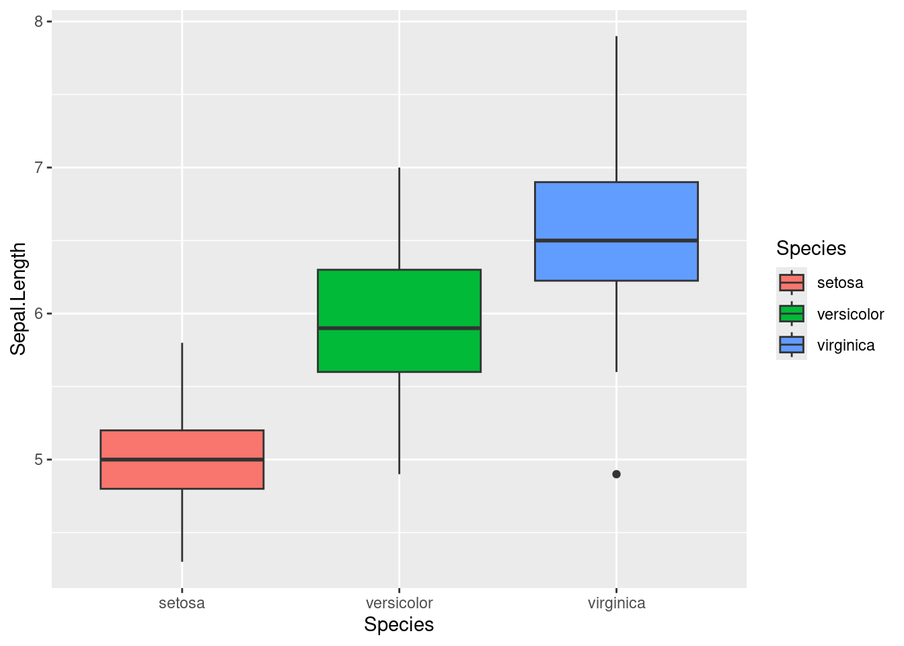
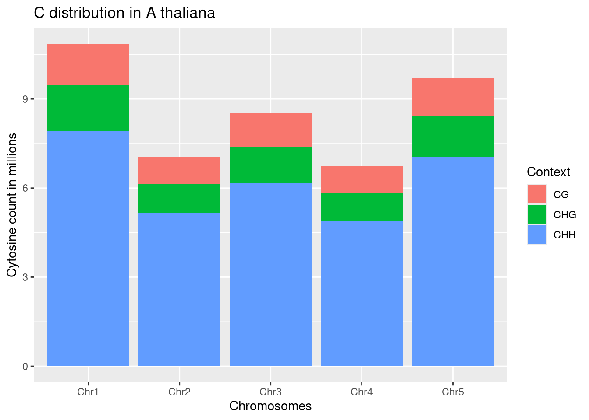

Chapter 7 GGPLOT
ggplot2 is a powerful data visualization package in R that allows you to create a wide variety of graphs and plots. It is based on the grammar of graphics, a structured approach to constructing plots that emphasizes the mapping of data to visual attributes.
7.1 Five key steps to ggplot
There are 5 key steps in plotting in ggplot 1.The Setup - Read the dataset, define x and y axis 2. The Labels - Title, X and Y axis labels 3. The Theme - Default, Black and White, coloured etc. 4. The Facets - Individual Graphs for each group in data with exactly same range 5. The Layers or geoms - The actual plot type - e.g Bar plot, Box plot, Violin plot etc.
7.2 Biology behind the data we are using
<–Review the slide on minute 3 video 7–>
GGplot installation
7.3 Prepare the data for plotting - Data Assessment
Invoke the libraries
##
## Attaching package: 'data.table'## The following objects are masked from 'package:dplyr':
##
## between, first, lastRead the data using the fread function
View the first ficve records of the data
## Chromosome Context Count Count_in_millions
## <char> <char> <int> <num>
## 1: Chr1 CG 1394740 1.394740
## 2: Chr2 CG 915144 0.915144
## 3: Chr3 CG 1118062 1.118062
## 4: Chr4 CG 879170 0.879170
## 5: Chr5 CG 1260598 1.260598
## 6: Chr1 CHG 1543980 1.543980Look at the nature of the data
## Classes 'data.table' and 'data.frame': 15 obs. of 4 variables:
## $ Chromosome : chr "Chr1" "Chr2" "Chr3" "Chr4" ...
## $ Context : chr "CG" "CG" "CG" "CG" ...
## $ Count : int 1394740 915144 1118062 879170 1260598 1543980 988829 1225767 957674 1377407 ...
## $ Count_in_millions: num 1.395 0.915 1.118 0.879 1.261 ...
## - attr(*, ".internal.selfref")=<externalptr>In the dataset, there are numeric variables a well as character columns. There are 15 records in the dataset
Calculate the summary statistics
## Chromosome Context Count Count_in_millions
## Length:15 Length:15 Min. : 879170 Min. :0.8792
## Class :character Class :character 1st Qu.:1053446 1st Qu.:1.0534
## Mode :character Mode :character Median :1377407 Median :1.3774
## Mean :2857317 Mean :2.8573
## 3rd Qu.:5025181 3rd Qu.:5.0252
## Max. :7917805 Max. :7.9178Do the data have null values?
## [1] 0This data does not have any null values.
## [1] "data.table" "data.frame"7.4 Plotting
7.4.1 Base set up
Before plotting the data, you need to: - Define the graph skeleton - Define the aesthetics - Define the labels
graph=ggplot(methylated_c,
aes(x=Chromosome, y=Count_in_millions))+ #graph aesthetics
labs(x="Chromosomes", y="Cytosine count in millions", title="C distribution in A thaliana") #graph labels
print(graph)
- Define the type of graph - geoms. For this case, the graph is a bar graph

- Add some depth to the chart - introduce the third variable “Context” Make it a stacked bar chart

The graphs can also be a grouped bar chart when the position is defined as “dodge” upon further modifications

- Faceting - Group the charts by context Faceted graphs - these are related data plotted separately on the same image/diagram.

GGPlot randomly select colours to paint the graph but the biologist/statistician can use predefined colours as below.

- Modifying the background colour

All of the above steps can be combined to come up with a decent graph from ggplot library.
my_title = expression(paste("Cystosine distribution in ", italic("Arabidopis thaliana")))#Define the title
graph_final = ggplot(methylated_c, aes(x=Chromosome, y=Count_in_millions))+
labs(x="Chromosomes", title = my_title) +
facet_grid(~Context) +
geom_col(position="dodge")+
aes(fill=Context)+scale_fill_manual(values = c("brown", "blue", "red"))+
theme_bw(base_size = 9)+theme(panel.background = element_rect(fill="lightblue"))
print(graph_final) The
The expression is used to combine name italics and normal fonts - this helps biologists include botanical names in charts
- The graphs can be exported as images or pdf. This can be done in RStudio <–Show screenshots if possible–>
7.5 Working with inbuilt iris data
- plot a box plot to compare the sepal length in diferent iris species
 Virginica have higher sepal length however some virginica have less sepal length than versicolor
Violin plot will show a better distribution than boxplot

tidyr
this package is used to reshape data especially from a long format to a short format.
Invoke the library
- Convert to a long format
gathercommand is used to convert data into fewer columns. The columns from sepal length to petal width are to be merged to a single column called messearements
#Gather from sepal length to petal width column into type and measurement column
iris_long = gather(iris, type, measurement, Sepal.Length:Petal.Width, factor_key = TRUE)
tail(iris_long)## Species type measurement
## 595 virginica Petal.Width 2.5
## 596 virginica Petal.Width 2.3
## 597 virginica Petal.Width 1.9
## 598 virginica Petal.Width 2.0
## 599 virginica Petal.Width 2.3
## 600 virginica Petal.Width 1.8Lets plot the data to a boxplot
graph=ggplot(iris_long, aes(x=Species,y=measurement))+
labs(x="Species", y="Length in cm", title = "variation in Petals and Sepals of Iris Species")+
theme(axis.text = element_text(angle=90))+
facet_grid(~type)+
aes(fill=Species)+
geom_boxplot()
print(graph)
the same can also be plotted to a violin plot
graph=ggplot(iris_long, aes(x=Species,y=measurement))+
labs(x="Species", y="Length in cm", title = "variation in Petals and Sepals of Iris Species")+
theme(axis.text = element_text(angle=90))+
facet_grid(~type)+
aes(fill=Species)+
geom_violin()
print(graph)